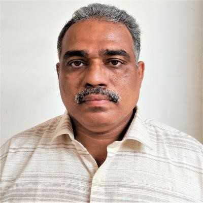
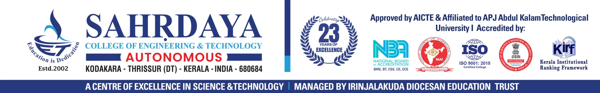
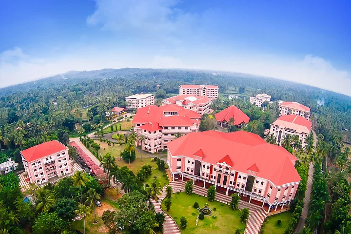
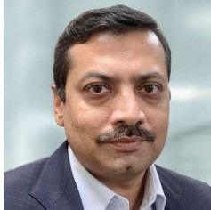
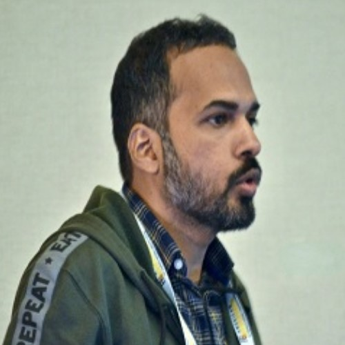
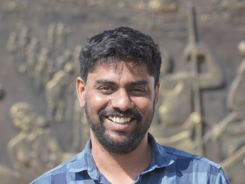
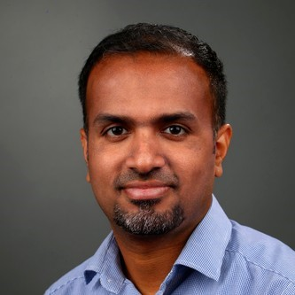
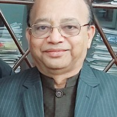
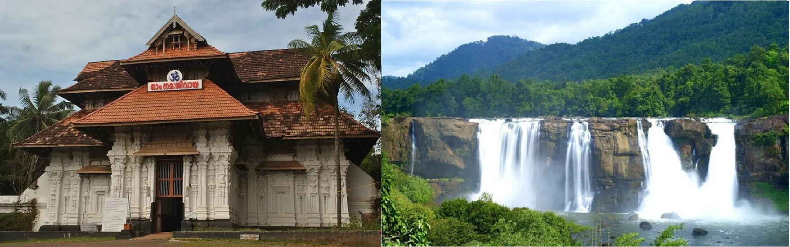

Dr. Roy P. Paily
Professor, Department of Electronics and Electrical Engineering, IIT Guwahati
Topic: VLSI Devices and Circuits for Smart Cities

Sahrdaya College of Engineering and Technology (Autonomous)
In association with IEEE Kerala Section
The International Conference on AI-Driven Solutions for Sustainable Smart Cities: Challenges and Opportunities (ADSSSC 2026) focuses on intelligent computational systems that enable inclusive, resilient, and sustainable urban environments across domains such as healthcare, mobility, energy, environment, and infrastructure.
The conference brings together researchers, practitioners, and industry professionals to present cutting-edge research, innovative applications, and cross-disciplinary solutions in Electrical, Electronics, Computer Science, Biomedical, Biotechnology, and Information Sciences.
ADSSSC 2026 features invited keynotes, technical paper sessions, tutorials, and workshops, and aims to foster strong collaborations between academia, industry, and government agencies.
Sahrdaya College of Engineering & Technology (Autonomous) is a leading engineering institution in Kerala with a strong focus on academic excellence, research, innovation, and industry collaboration.
The college offers flagship B.Tech programs in Biotechnology, Biomedical, Civil, Computer Science, Electrical & Electronics, and Electronics & Communication, along with M.Tech programs in Embedded Systems, Industrial Biotechnology, and Computer Science.
Sahrdaya is accredited by NBA and NAAC, recognized as a Scientific and Industrial Research Organization (SIRO) by DSIR, and hosts several centers of excellence and innovation hubs that support startups, entrepreneurship, and translational research.

Distinguished experts delivering keynotes at ADSSSC 2026.

Professor, Department of Electronics and Electrical Engineering, IIT Guwahati
Topic: VLSI Devices and Circuits for Smart Cities

Global Head of IT & Digital Transformation at Biocon Biologics

Associate Professor, Department of Biosciences and Bioengineering, IIT Bombay

Associate Professor, Civil Engineering, IIT Palakkad

Senior Researcher - Juelich Research Center and Co-Founder and CTO Silizium Circuits Private Limited, Germany

Professor, Scientist, Vice-Chairman (Research) and Director, IoT and Intelligent Systems Lab,
School of Computer Science, Duy Tan University, Da Nang, Viet Nam
Topic: IoT‑Driven Intelligent Systems for Next‑Generation Smart Cities

Former Dr Raja Ramanna DRDO Distinguished Fellow. Prof & Director of Research, JNTUH, Currently President iSPACE and Senior Advisor, UC BerkeleyHaas Institute, Geospatial analytics, Marine GIS, Business Analytics,

Dr. Benny Raphael, Professor, Building Technology and Construction Management Division, HOD, Civil Engineering Department, IIT Madras, Chennai
International Conference on AI-Driven Solutions for Sustainable Smart Cities: Challenges and Opportunities.
| Track | Theme | Key Focus Areas |
|---|---|---|
| Track 1 | AI for Sustainable Healthcare Systems | AI-driven diagnosis and treatment; biomedical sensors and wearables; telemedicine; clinical decision support; assistive technologies for elderly and differently abled |
| Track 2 | Smart Mobility and Intelligent Transport Systems | AI-based traffic management; autonomous and connected vehicles; sustainable urban transport planning; V2X and IoT-enabled mobility; smart logistics |
| Track 3 | AI-Enabled Energy Systems and Smart Grids | Renewable energy forecasting; grid optimization; energy storage and management; power-electronic interfaces; demand-response strategies |
| Track 4 | Sensors, Actuators and Edge Intelligence | Next-generation sensors for environment and health; edge AI and low-latency inference; energy-harvesting sensor networks; embedded sensing and actuation |
| Track 5 | Communication, IoT and Cyber-Physical Systems | 5G/6G and IoT networking; AI-driven communication protocols; urban IoT for water, waste, and air quality; cybersecurity and privacy for CPS |
| Track 6 | AI, Algorithms and Sustainability in Urban Systems | Algorithms for sustainable planning; AI for climate resilience and disaster management; cross-domain AI integration; policy, ethics, and governance |
Click each track to view the detailed presentation schedule.
| Sl.No | Paper ID | Title of the Accepted Paper | Registered Author | Affiliation / Institution | Date | Time |
|---|---|---|---|---|---|---|
| 1 | 815 | Machine Learning Approach For Rapid ECG-Based Cardiac Anomaly Detection | Vijay Chowary | St John's College of Engineering and Technology | 09-04-2026 | 11.45 AM – 12.00 PM |
| 2 | 481 | NeoPulse: Fetal Health Monitoring System | Aiswarya K | Sahrdaya College of Engineering and Technology | 09-04-2026 | 12.00 PM – 12.15 PM |
| 3 | 192 | Virtual Screening and Molecular Dynamics Analysis of Natural Inhibitors for Liver Cirrhosis with Emerging AI Applications | Joshna B Ann | Sahrdaya College of Engineering and Technology | 09-04-2026 | 12.15 PM – 12.30 PM |
| 4 | 272 | AI-Powered Brain MRI Assistant for Automated Tumor Analysis | Nyju S | Rajagiri School of Engineering and Technology | 09-04-2026 | 12.30 PM – 12.45 PM |
| 5 | 91 | From Algorithms to Heartbeats: A Survey of AI and IoT Approaches in Heart Disease Prediction | Shruthi S Nair | Saveetha Engineering College | 09-04-2026 | 12.45 PM – 01.00 PM |
| LUNCH BREAK | ||||||
| 6 | 854 | Residual Quantum Deep Learning Model for Macular Degeneration | SABI S | Sree Buddha College of Engineering | 09-04-2026 | 2.00 PM – 2.15 PM |
| 7 | 478 | NUTRIVISION: Personalized Nutrition using Machine Learning | Saniya S | Jawaharlal College of Engineering & Technology | 09-04-2026 | 2.15 PM – 2.30 PM |
| 8 | 623 | Adaptive Residual Network Optimization for Diabetic Foot Ulcer Classification | Santhoshkumar S P | Vel Tech Rangarajan Institute of Technology | 09-04-2026 | 2.30 PM – 2.45 PM |
| 9 | 462 | Generative AI vs Transformer Framework for Cardiovascular Disease Classification | Jasjit S Suri | AtheroPoint LLC | 09-04-2026 | 2.45 PM – 3.00 PM |
| 10 | 325 | Efficient Hybrid Features for Cross-Subject EEG Emotion Recognition | Praveena S Kammath | APJ Abdul Kalam Technological University | 09-04-2026 | 3.00 PM – 3.15 PM |
| 11 | 333 | Graph Attention Network for Sleep Stage Classification | Vrinda V Gopal T | APJ Abdul Kalam Technological University | 09-04-2026 | 3.15 PM – 3.30 PM |
| 12 | 156 | ALERA: AI Conversational Skin Disease Classification System | Midhun G Kaimal | APJ Abdul Kalam Technological University | 09-04-2026 | 3.30 PM – 3.45 PM |
| 13 | 298 | CTG Based Fetal Health Classification using ML with SHAP | Anjana Varghese | Sahrdaya College of Engineering and Technology | 09-04-2026 | 3.45 PM – 4.00 PM |
| 14 | 583 | Doctor-AI Collaboration Using HeatMap Based Explainable Models | Munimanda Premchander | Mallareddy Engineering College for Women | 09-04-2026 | 4.00 PM – 4.15 PM |
| 15 | 280 | Neonatal Care System for Jaundice and Congenital Heart Disease | Joel Jose | Sahrdaya College of Engineering and Technology | 09-04-2026 | 4.15 PM – 4.30 PM |
| 16 | 277 | Hybrid Multimodal Emotion Recognition using EEG and Facial Features | Neethu T V | Jyothi Engineering College | 09-04-2026 | 4.30 PM – 4.45 PM |
| 17 | 236 | MEDISCAN | Nandana K | Jyothi Engineering College | 09-04-2026 | 4.45 PM – 5.00 PM |
| 10-04-2026 | ||||||
| 18 | 119 | Blockchain-Integrated Deep Learning Framework for Chest X-Ray Diagnosis | Sriramkumar R | Dayananda Sagar University | 10-04-2026 | 10.15 AM – 10.30 AM |
| 19 | 128 | Real-Time Personalized Air Quality Health Risk Monitoring | Ann Mariya CR | Jyothi Engineering College | 10-04-2026 | 10.30 AM – 10.45 AM |
| 20 | 835 | Comparative Analysis of ML Algorithms for Spine Condition Classification | Sindhura D N | Manipal Institute of Technology | 10-04-2026 | 10.45 AM – 11.00 AM |
| 21 | 36 | Attention-BiLSTM Framework for Polycystic Ovary Syndrome Classification | Ardra V A | Jyothi Engineering College | 10-04-2026 | 11.00 AM – 11.15 AM |
| Sl No | Paper ID | Title | Author | Affiliation | Date | Time |
|---|---|---|---|---|---|---|
| Keynote Session | 09-04-2026 | 12:00 PM – 12:30 PM | ||||
| Dr. B K Bhavathrathan | IIT Palakkad | |||||
| 1 | 477 | Rail Rover: Integrated Rail Track Cleaning And Crack Detection System | Anusha K | Jawaharlal College of Engineering & Technology | 09-04-2026 | 12:30 PM – 12:45 PM |
| 2 | 250 | Comprehensive Analysis of Path Planning Algorithms for Autonomous Humanoid Navigation | Nandhagopal C R | Vidya Academy of Science and Technology | 09-04-2026 | 12:45 PM – 01:00 PM |
| LUNCH BREAK | ||||||
| 3 | 497 | Edge-Accelerated Hardware Efficient Image Enhancement for Intelligent Traffic Surveillance | Anandakrishnan | Sahrdaya College of Engineering and Technology | 09-04-2026 | 01:30 PM – 01:45 PM |
| 4 | 454 | Smart Transit Guardian – Navigating Safety & Efficiency | Sourav Sanjay | Jawaharlal College of Engineering and Technology | 09-04-2026 | 01:45 PM – 02:00 PM |
| 5 | 564 | AI Driven Driver Safety and Fatigue Monitoring System | Gudi Indhu Reddy | Malla Reddy Engineering College for Women | 09-04-2026 | 02:00 PM – 02:15 PM |
| 6 | 276 | Comparative Analysis of Classical Guidance Laws for UAV Navigation | Bejoy Jose | Vidya Academy of Science and Technology | 09-04-2026 | 02:15 PM – 02:30 PM |
| 7 | 636 | Multi-Object Detection in Autonomous Vehicles using Modified RT-DETR | Dhanesh M S | SRM Institute of Science and Technology | 09-04-2026 | 02:30 PM – 02:45 PM |
| 8 | 616 | Dynamic Traffic Optimization using Machine Learning and SUMO | Sai Keshav Palakurthi | SRM Institute of Science and Technology | 09-04-2026 | 02:45 PM – 03:00 PM |
| 9 | 786 | Real Time Analytics Approach to Finding Nearby Transportation | Arun Kumar S | Hindustan Institute of Technology and Science | 09-04-2026 | 03:00 PM – 03:15 PM |
| 10 | 338 | Enhancing UAV Image Object Detection using YOLOv5 | Raihan Zakheer | Federal Institute of Science and Technology | 09-04-2026 | 03:15 PM – 03:30 PM |
| 11 | 331 | Real-Time Obstacle Detection for Autonomous Vehicles | Abhai Suresh | Sree Buddha College of Engineering | 09-04-2026 | 03:30 PM – 03:45 PM |
| 12 | 453 | Taxi Trip Data Pattern Identification using Big Data | S Hariharan | Jyothi Engineering College | 09-04-2026 | 03:45 PM – 04:00 PM |
| 13 | 251 | V2V-LLM: Large Language Models for Cooperative Driving | Abhimanyu CR | Vidya Academy of Science and Technology | 09-04-2026 | 04:00 PM – 04:15 PM |
| 14 | 608 | Rolling Shutter Correction and Temporal Super-Resolution | Merin Mary Shibu | College of Engineering Trivandrum | 09-04-2026 | 04:15 PM – 04:30 PM |
| 15 | 808 | AI-Powered Smart Driving Assistant System | Mahesh K R | VAST | 09-04-2026 | 04:30 PM – 04:45 PM |
| 16 | 321 | Machine Learning Drone System for Water Detection | Nishanth Rishu Jha | G Pullaiah College of Engineering | 09-04-2026 | 04:45 PM – 05:00 PM |
| Sl No | Paper ID | Title of the Accepted Paper | Registered Author | Affiliation / Institution | Date | Time |
|---|---|---|---|---|---|---|
| 1 | 154 | A Fully Supervised Framework for Lightweight Soiling Segmentation on Photovoltaic Panels using YOLOv8 | Abhijith M | Jyothi Engineering College, Cheruthuruthy | 10-04-26 | 10:30 AM – 10:45 AM |
| 2 | 593 | Hybrid GA–PSO Optimized PID Control for Frequency Stability Enhancement in Inverter-Dominated Microgrids | Poovannan Vp | Rajalakshmi Engineering College, Chennai | 10-04-26 | 10:45 AM – 11:00 AM |
| 3 | 288 | Optimal Dispatch of Hydrogen Supported Integrated Energy Systems via Adaptive Mountain Gazelle Optimizer | Edwin Raja S | Vel Tech Rangarajan Dr. Sagunthala R&D Institute of Science and Technology | 10-04-26 | 11:00 AM – 11:15 AM |
| 4 | 233 | Machine Learning Based Smart Grid Energy Optimization on Embedded Edge Systems | Adinath M | Rajalakshmi Institute of Technology, Chennai | 10-04-26 | 11:15 AM – 11:30 AM |
| 5 | 847 | AI-Powered Drone System for Smart Inspection and Fault Detection in Power Distribution Lines | Philip Mark | Jyothi Engineering College, Cheruthuruthy | 10-04-26 | 11:30 AM – 11:45 AM |
| 6 | 344 | Bi-Directional Power Flow Control in Grid-Interfaced Solar Water Pumping with PWM-on-PWM BLDC Motor Drive | Bilal M | Carmel College of Engineering and Technology, Alappuzha | 10-04-26 | 11:45 AM – 12:00 PM |
| 7 | 216 | AI-Enabled Smart Border Surveillance System with Multi-Sensor Fusion and Embedded Threat Detection | Aswathy Ajithkumar | Vidya Academy of Science and Technology | 10-04-26 | 12:00 PM – 12:15 PM |
| 8 | 284 | DQN Based EV Charging Scheduling for Distribution Grid Load Balancing | Niranjan MS | Vidya Academy of Science and Technology, Thrissur | 10-04-26 | 12:15 PM – 12:30 PM |
| 9 | 547 | Synergistic Solar Photovoltaic and Vertical Axis Wind Turbine Generation | Jeeth Saji | Sahrdaya College of Engineering and Technology (Autonomous) | 10-04-26 | 12:30 PM – 12:45 PM |
| 10 | 444 | Design, Comparative Analysis, Simulation and Hardware Test of Five-Level Hybrid T-Type/H-Bridge Multilevel Inverter | Austin John | Sahrdaya College of Engineering and Technology (Autonomous) | 10-04-26 | 12:45 PM – 01:00 PM |
| LUNCH BREAK | ||||||
| Keynote Session – Dr. Kumaravel S, Associate Professor, NIT Calicut | 10-04-26 | 02:00 PM – 02:15 PM | ||||
| 11 | 452 | Intelligent Cybersecurity Architecture for Flying Taxis Using AI-Based Intrusion Detection | Tamil Selvi S K | Saveetha Engineering College | 10-04-26 | 02:15 PM – 02:30 PM |
| 12 | 297 | IoT-Integrated Smart Charging Scheduler and Battery Management System for EV Battery Life Enhancement | Nikhitha Joy | Vidya Academy of Science and Technology, Thrissur | 10-04-26 | 02:30 PM – 02:45 PM |
| 13 | 124 | LSTM-Augmented Deep RL Controller for Energy-Efficient HVAC Airflow and Damper Management | R Tamilamuthan | PERI Institute of Technology | 10-04-26 | 02:45 PM – 03:00 PM |
| 14 | 722 | Quantum-Inspired RISC-Based Neuromorphic SoC Architecture for Federated Edge AI | Adinath M | Rajalakshmi Institute of Technology | 10-04-26 | 03:00 PM – 03:15 PM |
| Sl No | Paper ID | Title of the Accepted Paper | Registered Author | Affiliation / Institution | Date | Time |
|---|---|---|---|---|---|---|
| Keynote Session – Dr. Muralikrishna V. Iyyanki (IISc Bangalore) | 09-04-26 | 12:00 PM – 12:15 PM | ||||
| 1 | 41 | Aquavac: AI-Driven Autonomous Waste Collection for Enhanced Water Sustainability | Ardra V A | Jyothi Engineering College | 09-04-26 | 12:15 PM – 12:30 PM |
| 2 | 90 | A Hybrid Security-Driven Optimization Architecture for Scalable Agricultural Wireless Sensor Networks | Gayathri P A | Vidya Academy of Science and Technology, Thrissur | 09-04-26 | 12:30 PM – 12:45 PM |
| 3 | 98 | EDUGUARD | Christo Sojan | Sahrdaya College of Engineering and Technology | 09-04-26 | 12:45 PM – 01:00 PM |
| LUNCH BREAK | ||||||
| 4 | 283 | Hand Gesture Mouse With AI Support | Niranjan T | Vidya Academy of Science and Technology | 09-04-26 | 02:00 PM – 02:15 PM |
| 5 | 384 | Real-Time Fraud Detection Using Sensor Data and Machine Learning for Secure Transactions | Eashan Jain | SRM University – KTR Campus | 09-04-26 | 02:15 PM – 02:30 PM |
| 6 | 618 | IoT-Based Radiation Leak Detection and Emergency Alert System | Karicheti Srinija | Vel Tech Rangarajan Dr. Sagunthala R&D Institute of Science and Technology | 09-04-26 | 02:30 PM – 02:45 PM |
| 7 | 620 | Cloud Based IoT Health Care System | Mala Rajasekhar | Hindustan Institute of Technology and Science | 09-04-26 | 02:45 PM – 03:00 PM |
| 8 | 649 | An IoT-Based Smart Platform for Epilepsy Monitoring and Seizure Detection | Krishnaprasad K | Jawaharlal College of Engineering and Technology | 09-04-26 | 03:00 PM – 03:15 PM |
| 9 | 650 | Nimbus: AI-Powered Smart Drone Tracking and Neutralization | Akhila | Jawaharlal College of Engineering and Technology | 09-04-26 | 03:15 PM – 03:30 PM |
| 10 | 670 | Smart Railway Safety System Using AI-Based Monitoring | Shishira M C | Jawaharlal College of Engineering and Technology | 09-04-26 | 03:30 PM – 03:45 PM |
| 11 | 675 | Latency Optimized Application Placement for IoT-Based Automated Anesthesia | Anju Babu | Karunya Institute of Technology and Sciences | 09-04-26 | 03:45 PM – 04:00 PM |
| 12 | 426 | Real-Time Attendance Tracking Using AI and YOLO | Anusree M | Jawaharlal College of Engineering and Technology | 09-04-26 | 04:00 PM – 04:15 PM |
| 13 | 275 | A Comprehensive Benchmark of Multispectral Weed Segmentation Models | Sanjana Suresh | Muthoot Institute of Technology and Science | 09-04-26 | 04:15 PM – 04:30 PM |
| 10-04-2026 | ||||||
| 14 | 769 | Smart IoT-Based Terrace Gardening System | Karthika Devi M | National Engineering College | 10-04-26 | 10:30 AM – 10:45 AM |
| 15 | 862 | IoT-Based Multi-Vital Signs Monitoring with AI-Driven Health Prediction | Viyyuri Nikhil Vasanth | Vellore Institute of Technology | 10-04-26 | 10:45 AM – 11:00 AM |
| 16 | 863 | IoT-Integrated Sleep Posture Monitoring Using Velostat | Matta Lakshmi Narayana Joshith Reddy | Vellore Institute of Technology | 10-04-26 | 11:00 AM – 11:15 AM |
| 17 | 871 | Centralized Facial Recognition-Based Attendance Monitoring System | Dilbar Mohammed Niyas M | Christ College (Autonomous), Irinjalakuda | 10-04-26 | 11:15 AM – 11:30 AM |
| 18 | 882 | Predicting Student Adaptability in Online Education Using Optimized Gaussian Naive Bayes | Tanvi Singh | SRM Institute of Science and Technology | 10-04-26 | 11:30 AM – 11:45 AM |
| 19 | 886 | Real-Time Multi-Parameter Cardiac Anomaly Detection System Using IoT | Gavarasana Surya Rao | Vellore Institute of Technology | 10-04-26 | 11:45 AM – 12:00 PM |
| 20 | 427 | EvalMate AI: AI-Based Adaptive Assessment & Evaluation System | Navaneeth S | Jawaharlal College of Engineering & Technology | 10-04-26 | 12:00 PM – 12:15 PM |
| 21 | 225 | AI-Based Urban Noise Source Classification for Sustainable Smart Cities | Mandip Goswami | Independent Researcher | 10-04-26 | 12:15 PM – 12:30 PM |
| 22 | 423 | IMAGEIN AI | Navaneeth S | Jawaharlal College of Engineering & Technology | 10-04-26 | 12:30 PM – 12:45 PM |
| 23 | 830 | YOLO-Based Deep Learning with Attention Mechanisms for Robust Micro-Algae Identification | Jasmin Basheer | APJ Abdul Kalam Technological University | 10-04-26 | 12:45 PM – 01:00 PM |
| Sl No | Paper ID | Title of the Accepted Paper | Registered Author | Affiliation / Institution | Date | Time |
|---|---|---|---|---|---|---|
| 1 | 10 | Smart IoT-Based Framework for Wall Crack and Leak Detection Using Cloud-Integrated Lightweight CNN | Eby C V | Vidya Academy of Science and Technology, Thrissur | 09-04-2026 | 12:00 PM – 12:15 PM |
| 2 | 50 | Optimised YOLOv8 Approach for Automatic Number Plate Recognition and Vehicle Sorting | Anjali K | Jyothi Engineering College | 09-04-2026 | 12:15 PM – 12:30 PM |
| 3 | 255 | Inset-Fed Microstrip Rectenna for Wi-Fi Energy Harvesting Using Voltage Doubler Rectifier | C Sanjana Manoj | Jyothi Engineering College | 09-04-2026 | 12:30 PM – 12:45 PM |
| 4 | 282 | Design and Structure of Autonomous Farming Robot | Aljo Anto | Sahrdaya College of Engineering and Technology | 09-04-2026 | 12:45 PM – 01:00 PM |
| LUNCH BREAK | ||||||
| 5 | 324 | SDR-Controlled Reconfigurable Microstrip Patch Antenna Array for Cognitive Radio | Sreeva V G | Vidya Academy of Science and Technology | 09-04-2026 | 02:00 PM – 02:15 PM |
| 6 | 415 | Community Connect: Django Platform for Neighborhood Communication | Anirudh P R | Jawaharlal College of Engineering and Technology | 09-04-2026 | 02:15 PM – 02:30 PM |
| 7 | 450 | NETRA – IoT Based Smart Glass System for Visually Impaired Individuals | Keerthana V | Jawaharlal College of Engineering and Technology | 09-04-2026 | 02:30 PM – 02:45 PM |
| 8 | 498 | LoRa-Based Vehicle Anti-Theft System with Real-Time License Plate Verification | Irfan Muhammed C Ashiq | Sahrdaya College of Engineering and Technology | 09-04-2026 | 02:45 PM – 03:00 PM |
| 9 | 556 | Comparative Performance Analysis of ML Algorithms for Credit Card Fraud Detection | Bandna Thakur | School of Advance Computing, CGC University Mohali | 09-04-2026 | 03:00 PM – 03:15 PM |
| 10 | 832 | Gesture-Controlled Hospital Bed Using Deep Learning and IoT | Prashob S Nair | Muthoot Institute of Technology and Science | 09-04-2026 | 03:15 PM – 03:30 PM |
| 11 | 842 | Energy-Efficient Fault-Tolerant Clustering and Routing in Wireless Sensor Networks | Afeef K T | Muthoot Institute of Technology and Science | 09-04-2026 | 03:30 PM – 03:45 PM |
| 12 | 897 | Secure Low Latency Anesthesia Automation Using Fog Computing | Royal Sunny | Sahrdaya College of Engineering and Technology | 09-04-2026 | 03:45 PM – 04:00 PM |
| 13 | 803 | Architecture and Performance Analysis of Spectral Feature Based Speech Enhancement | Jaimy James Poovely | Adi Shankara Institute of Engineering and Technology | 09-04-2026 | 04:00 PM – 04:15 PM |
| 14 | 804 | IoT-Enabled Smart Cloth Peg for Laundry Management | Amrita M Pillai | College of Engineering, Trivandrum | 09-04-2026 | 04:15 PM – 04:30 PM |
| 10-04-2026 | ||||||
| Keynote Session – Dr. Roy Paily, IIT Guwahati | 10-04-2026 | 10:30 AM – 11:00 AM | ||||
| 15 | 703 | Closing the Affective Loop in Human-Robot Conversation | Sujeet Sharma | AKTU Lucknow | 10-04-2026 | 11:00 AM – 11:15 AM |
| 16 | 262 | SURAKSHA YATRA: IoT and Edge-AI System for Tourist Safety | Rithik Mishra | Velagapudi Ramakrishna Siddhartha Engineering College | 10-04-2026 | 11:15 AM – 11:30 AM |
| 17 | 718 | FPGA-Based Lip Movement Detection for Hearing Aid Performance | Srilakshmi Shajin | Amrita Vishwa Vidyapeetham | 10-04-2026 | 11:30 AM – 11:45 AM |
| 18 | 837 | Power Efficient Digital Receivers Using Polyphase CIC Filter | Jincy Anto K | Amrita Vishwa Vidyapeetham | 10-04-2026 | 11:45 AM – 12:00 PM |
| 19 | 81 | Energy-Aware Real-Time Rendering for Isomorphic Web Apps | Kailas Nath S | Christ University | 10-04-2026 | 12:00 PM – 12:15 PM |
| 20 | 264 | Privacy-Preserving Verification Using Decentralized Identifiers | Partheban M | St Joseph Institute of Technology | 10-04-2026 | 12:15 PM – 12:30 PM |
| 21 | 502 | Robust Data Watermarking for Tabular Datasets Using TLBO | Sanjay Gireesan | Rajiv Gandhi Institute of Technology | 10-04-2026 | 12:30 PM – 12:45 PM |
| 22 | 511 | SIW Based Ultra Wideband Antenna for IoT and 5G Systems | Akshay Anil Kumar | St Joseph's Institute of Technology | 10-04-2026 | 12:45 PM – 01:00 PM |
| LUNCH BREAK | ||||||
| 23 | 576 | SCR-Auth: Secure Call Receiver Authentication Using Outer Ear Echoes | Mandaloju Manogna | Malla Reddy Engineering College for Women | 10-04-2026 | 02:00 PM – 02:15 PM |
| 24 | 585 | Privacy-Preserving User Authentication Using Zero Knowledge Proofs | Machiraju Pranathi | Malla Reddy Engineering College for Women | 10-04-2026 | 02:15 PM – 02:30 PM |
| 25 | 696 | HADAP: Offline Parallel Anti-Virus Pipeline on Critical Infrastructure | A R Kavitha | Chennai Institute of Technology | 10-04-2026 | 02:30 PM – 02:45 PM |
| 26 | 599 | Cyber Attack Prediction Using AI | Munimanda Premchander | Malla Reddy Engineering College for Women | 10-04-2026 | 02:45 PM – 03:00 PM |
| 27 | 793 | Intelligent AXI4 Interconnect Using Reinforcement Learning | Adinath M | Rajalakshmi Institute of Technology | 10-04-2026 | 03:00 PM – 03:15 PM |
| 28 | 896 | Remote Infant Care Using IoT Integrated Neonatal Incubator | Dr Caren Babu | Christ College of Engineering, Irinjalakuda | 10-04-2026 | 03:15 PM – 03:30 PM |
| Sl No | Paper ID | Title of the Accepted Paper | Registered Author | Affiliation / Institution | Date | Time |
|---|---|---|---|---|---|---|
| 1 | 237 | A Lightweight and Interpretable Machine Learning Approach for SMS and Email Spam Detection | Dr. Sushitha Susan Joseph | Rajagiri School of Engineering & Technology / IIIT Kottayam | 09-04-2026 | 12:00 PM – 12:15 PM |
| 2 | 96 | Focus Preservation Index: A Perceptually Aligned Metric for Multi-Focus Image Fusion Evaluation | Santhi Krishna M S | Cochin University of Science and Technology | 09-04-2026 | 12:15 PM – 12:30 PM |
| 3 | 510 | Phishing Website Identification Using Sparse Representation and Autoencoder | Aswathy S | Jawaharlal College of Engineering and Technology | 09-04-2026 | 12:30 PM – 12:45 PM |
| 4 | 287 | ML-Based System for Automated Examination Hall Seating Arrangement | Sreeji S | Nehru College of Engineering and Research Centre | 09-04-2026 | 12:45 PM – 01:00 PM |
| LUNCH BREAK | ||||||
| 5 | 87 | Home Companion Robo | Jeevan Jacob | Jyothi Engineering College | 09-04-2026 | 02:00 PM – 02:15 PM |
| 6 | 339 | Hybrid YOLO-CNN Architecture for Smart Waste Classification | P Gomathi | Study World College of Engineering, Coimbatore | 09-04-2026 | 02:15 PM – 02:30 PM |
| 7 | 56 | AI-Powered Fish Population Estimation and Coral Health Classification | Neethu T V | Jyothi Engineering College | 09-04-2026 | 02:30 PM – 02:45 PM |
| 8 | 129 | LO&FO: AI-Powered Platform for Missing Person Identification | Rehna Baby Joseph | Sahrdaya College of Engineering and Technology | 09-04-2026 | 02:45 PM – 03:00 PM |
| 9 | 517 | FairFarm: MobileNet Architecture for Banana Leaf Disease Detection | Neha Paulson | Sahrdaya College of Engineering and Technology | 09-04-2026 | 03:00 PM – 03:15 PM |
| 10 | 336 | Real-Time Tomato Leaf Disease Detection Using CNN | Jisto PJ | Vidya Academy of Science and Technology | 09-04-2026 | 03:15 PM – 03:30 PM |
| 11 | 266 | Pitch Score: The Virtual Shark Tank Judge | Yazeen Meshal Sanuj | Rajagiri School of Engineering and Technology | 09-04-2026 | 03:30 PM – 03:45 PM |
| 12 | 805 | Future Farmcast: Agricultural Inventory and Market Forecasting | Abhinav K Manoj | Federal Institute of Science and Technology | 09-04-2026 | 03:45 PM – 04:00 PM |
| 13 | 316 | AI Powered Wildfire Prediction System | Afeefa PA | Jyothi Engineering College | 09-04-2026 | 04:00 PM – 04:15 PM |
| 14 | 359 | Hyper-Local Air Quality Monitoring Using ESP-NOW | Abhiram K S | Rajagiri School of Engineering and Technology | 09-04-2026 | 04:15 PM – 04:30 PM |
| 15 | 518 | Crack Detection in RCC Beam Using Deep Learning | Rani Wincen | Sahrdaya College of Engineering and Technology | 09-04-2026 | 04:30 PM – 04:45 PM |
| 16 | 581 | AI-Driven Framework for Automated Crime Reporting | Mende Poojitha | Malla Reddy Engineering College for Women | 09-04-2026 | 04:45 PM – 05:00 PM |
| 10-04-2026 | ||||||
| 17 | 858 | LEARNZO: Explainable Hybrid Adaptive Learning Framework | Arya T | Christ College (Autonomous), Irinjalakuda | 10-04-2026 | 10:00 AM – 10:15 AM |
| 18 | 433 | House Price Prediction Using SVM in Kerala | Anitha N | Jawaharlal College of Engineering and Technology | 10-04-2026 | 10:15 AM – 10:30 AM |
| 19 | 515 | LLM Integrated AI Assistant for Educational Institutions | Sangeeth Rajendran | APJ Abdul Kalam Technological University | 10-04-2026 | 10:30 AM – 10:45 AM |
| 20 | 587 | Vision-Based Fire Detection Using Surveillance Cameras | Kaleru Srivarshini | Malla Reddy Engineering College for Women | 10-04-2026 | 10:45 AM – 11:00 AM |
| 21 | 348 | VeriClassify: AI-Driven Document Categorization with Blockchain Git Workflow | Harry Thomas Binu | Federal Institute of Science and Technology | 10-04-2026 | 11:00 AM – 11:15 AM |
| 22 | 257 | ZeroPath: AI-Powered Waste Classification for Smart Cities | Dhiya Devassy | Jyothi Engineering College | 10-04-2026 | 11:15 AM – 11:30 AM |
| 23 | 346 | Autonomous Coconut Tree Climbing and Harvesting Robot | Helna Thomas | Jyothi Engineering College | 10-04-2026 | 11:30 AM – 11:45 AM |
| 24 | 342 | Decentralizing Merit: Blockchain Framework for Fair Content Evaluation | Karthik P | Federal Institute of Science and Technology | 10-04-2026 | 11:45 AM – 12:00 PM |
| 25 | 374 | Language Learning Paradigms: A Scholarly Overview | Divya Jose | Karunya Institute of Technology and Science | 10-04-2026 | 12:00 PM – 12:15 PM |
| 26 | 761 | Smart Autofocusing in In-Line Holography Using Deep Regression | Ajeena A | SRM Institute of Science and Technology | 10-04-2026 | 12:15 PM – 12:30 PM |
| 27 | 270 | COACH-X: Sequential Interview Performance Analyzer | Riya Philomina Shony | Christ College (Autonomous) | 10-04-2026 | 12:30 PM – 12:45 PM |
| LUNCH BREAK | ||||||
| 28 | 577 | Predicting Stock Market Movements Using News Sentiment | Macha Srilekha | Malla Reddy Engineering College for Women | 10-04-2026 | 02:00 PM – 02:15 PM |
| 29 | 409 | Seatmate: Exam Venue Scheduling System | Anjana S | Jawaharlal College of Engineering and Technology | 10-04-2026 | 02:15 PM – 02:30 PM |
| 30 | 514 | CNN-Based Deepfake Image Detection with Fourier Features | Dr V Sujatha | Vignan's Nirula Institute of Technology and Science | 10-04-2026 | 02:30 PM – 02:45 PM |
| 31 | 193 | Emotion-Aware Multilingual NLP and Persuasive Dialogue AI Voice Agents | Ane Maria Johny | APJ Abdul Kalam Technological University | 10-04-2026 | 02:45 PM – 03:00 PM |
| 32 | 460 | Agentic AI Systems for Flood Management in Kerala | Anjali Dinakaran | College of Engineering Trivandrum | 10-04-2026 | 03:00 PM – 03:15 PM |
| 33 | 448 | VESA: Secure Offline Voice-Controlled Smart Home Ecosystem | Surya Prakash G | Rajalakshmi Engineering College | 10-04-2026 | 03:15 PM – 03:30 PM |
A quick overview of IEEE ADSSSC 2026, its theme, highlights, and venue.
Gram Vista is an inclusive village-scale Cyber-Physical Systems (CPS) Smart Village initiative aligned with Unnat Bharat Abhiyan and driven by the Sahrdaya community vision of education through service.
The initiative serves as a living laboratory for ADSSSC 2026, enabling real-world validation of AI, IoT, Digital Twins, and CPS technologies across agriculture, water, energy, healthcare, and governance.
Category-wise registration details for IEEE ADSSSC 2026 (inclusive of applicable taxes).
| Category | Fee |
|---|---|
| Faculty — IEEE Members | ₹ 6,500 |
| Faculty — Non-IEEE Members | ₹ 8,000 |
| Student — IEEE Members | ₹ 5,000 |
| Student — Non-IEEE Members | ₹ 5,500 |
| Industry Professionals — IEEE Members | ₹ 7,600 |
| Industry Professionals — Non-IEEE Members | ₹ 9,000 |
| Foreign Delegates | US$ 255 |
The Microsoft Conference Management Toolkit (CMT) is used to manage the submission, review, and decision processes for ADSSSC 2026. The service is provided free of cost by Microsoft, including Azure infrastructure, software development, and support.
Thrissur, known as the “Cultural Capital of Kerala,” is renowned for its vibrant festivals, historic temples, and rich cultural heritage. The city hosts the famous Thrissur Pooram, one of the most spectacular temple festivals in India.
Attractions in and around Thrissur include:
With its welcoming atmosphere and diverse attractions, Thrissur provides an enriching cultural backdrop for conference participants.
